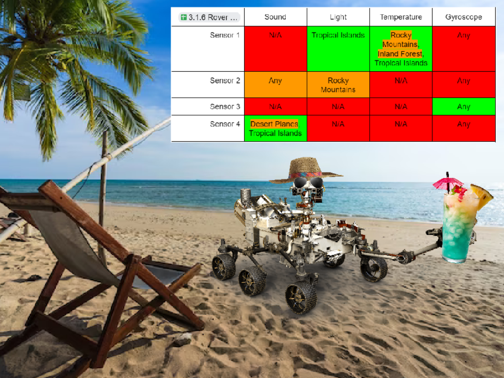

Our first step in the brainstorming process brought us to create snake, a simple game in which a player travels through a scaling, dynamic maze in order to capture food. In order to stay more original, we changed it to a mouse escaping from a scattered enemy map.
Minion Game
Our first thought was a roguelike where you could pick up items that give buffs, but the only item we made ws the mario superstar retextured as a banana. We were, however, able to make rockets rain from the sky and have evil minions coming from both sides.
One of the nicknames I have for my sister is "Bucketeer" so I wanted to do something with a bucket musketeer. The rest of the game was mostly drawn up by the rest of my team.
Fishtank security was the main goal of our project so we looked fot the errors and fixed them.
"Where's my Rover?" Project

After learning that out first guess, the Rocky Mountains, was incorrect, we set up a table that assumes each possible dataset for each sensor to be responsible for. using that, we found that the only location that ligned up with any plausible guessline was the Tropical Island. I hope Curiosity has a good time there.